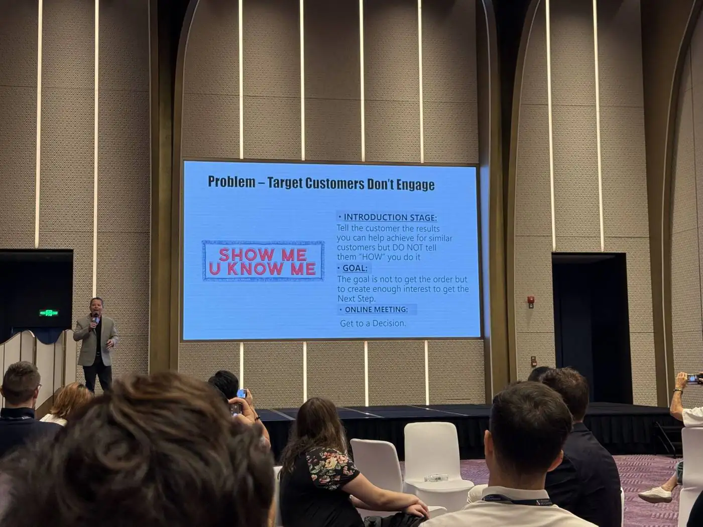
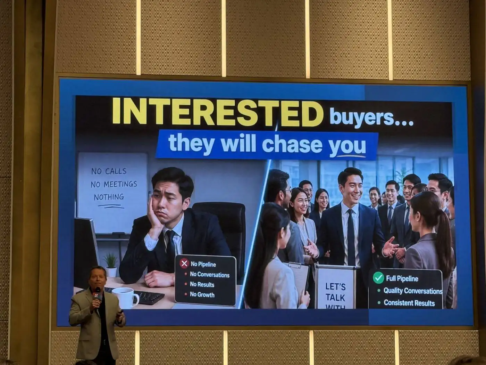
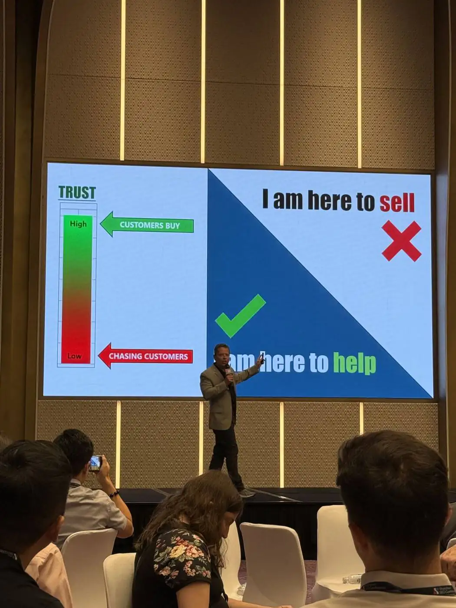
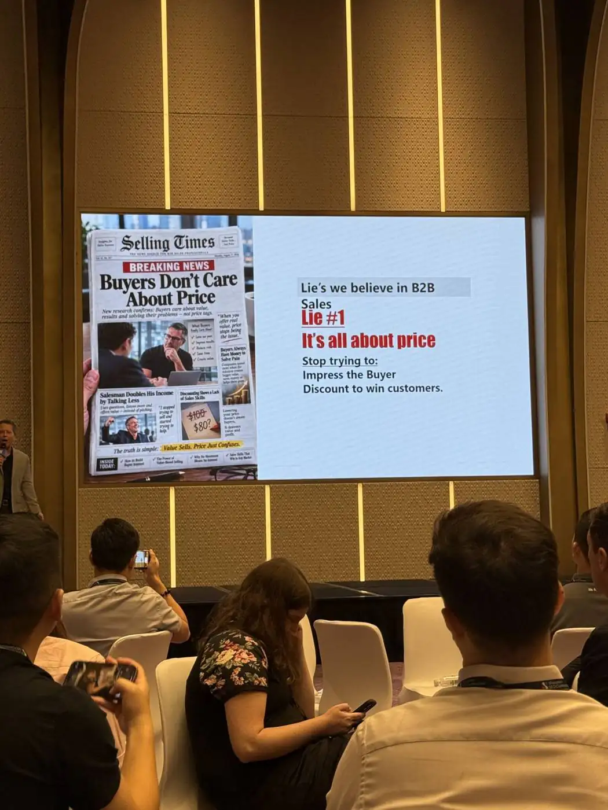
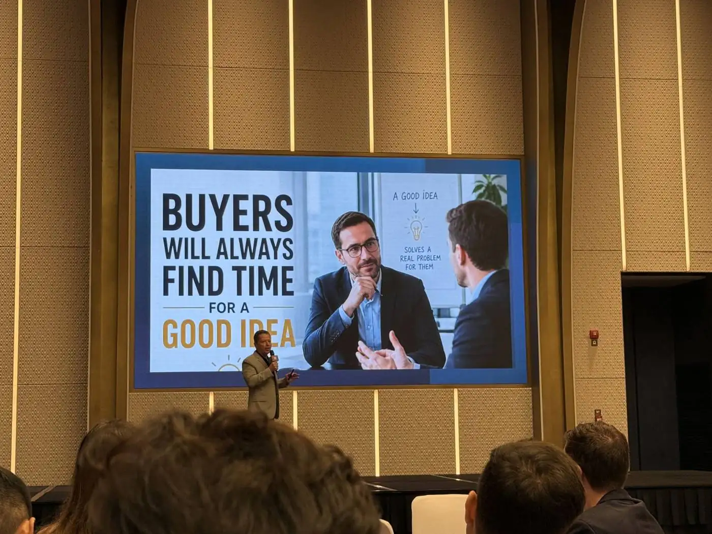
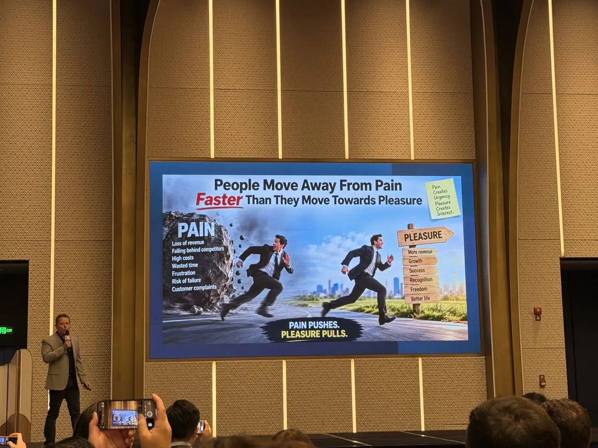
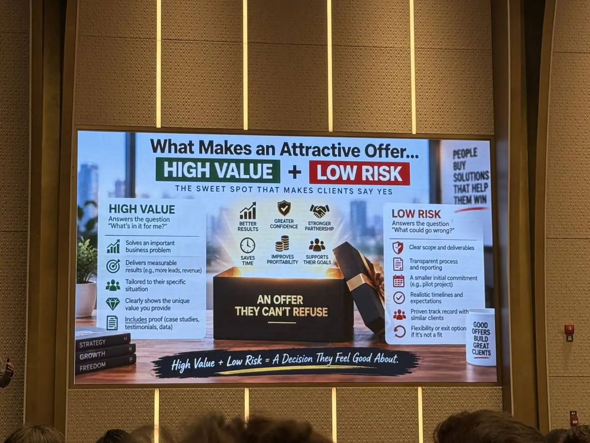
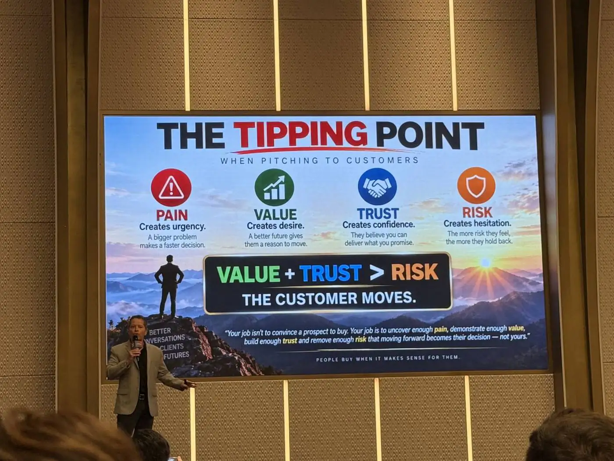

Nick White，Castle Trade Agency 创始人，30 年 B2B 销售经验，在美国代理中国企业，也常年在中国做销售培训。这 23 分钟他只讲一件事：买家决定"做还是不做"的那个临界点，到底由什么决定。下面按他的 PPT 顺序，把每一页配上中文讲解，并换成我们自己的场景——把 SEO 代运营和陪跑卖给工厂老板。
这是全场的结论。下面六章都在解释这个公式的每一项怎么做。
开场他先抛出一个所有销售都遇到过的问题：为什么有些客户很快说不，有些客户要追很多次？

他说，介绍阶段（Introduction Stage）要讲的是你为跟他类似的客户做到过什么结果，但不要讲你是怎么做到的。别一上来就把所有信息倒给对方。PPT 上那个红色印章写着 "SHOW ME U KNOW ME"——让我看到你懂我。
更关键的是目标设定：介绍公司这一步，目标不是拿单，而是拿到下一步。下一步通常是一个线上会议，在会上做 discovery，搞清楚对方公司的情况、什么对他重要、他的决策依据是什么。他说自己在美国代理中国企业，99% 的工作就是跟目标买家开这种线上会。

这页左右对比：左边是没有 pipeline、没有对话、没有结果、没有增长的人；右边是 pipeline 满、对话有质量、结果稳定的人。他的判断很直接：感兴趣的买家你不用追，他们会追你。如果你发现自己在反复追一个客户，说明他没看到足够的价值。
你讲完方案，对方当场看起来挺感兴趣，回去就消失了——这是所有人都经历过的。他给的解释是一条链：没有动作 = 没有兴趣；没有兴趣 = 没有价值。30 年、上千个案子，他说这一点百分之百成立。
右边那张温度计就是买家心里的天平：价格高过价值，人不买；价值高过价格，人很快就动。
"If they're interested, you don't have to chase them. They will chase you."
如果他真的感兴趣，你不用追他，他会来追你。

左边那根温度计是信任：信任高，客户买（CUSTOMERS BUY）；信任低，你在追客户（CHASING CUSTOMERS）。右边是两种心态，他打了叉的是"I am here to sell"，打勾的是"I am here to help"。
他的理由很实在：如果你带着"我必须说点聪明话、说点技巧把他拿下"的心态进会议，压力全压在自己身上；如果你带着"只有在我们能帮到你、能带来价值的前提下，我才想跟你做生意"的心态进去，整个对话的性质就变了。而且买家有第六感，能分辨你是来卖的还是来帮的。
"Change your mentality from 'I'm here to sell' to 'I'm here to help.'"
把心态从"我是来卖的"换成"我是来帮你的"。
这一段是全场最实用的部分。

他把"客户只看价格"称为 B2B 销售里的第一个谎言。因为天天听客户说"你太贵了、能不能便宜点"，我们就信了。PPT 下面写着要停掉两件事：想靠信息量打动买家、想靠打折赢客户。
真正的原因是：买家没看到足够的价值。看到价值的客户，愿意为价值付钱，愿意为解决痛点付钱。我们之所以陷入打折模式，是因为整场都在讲自己公司，压根没去找客户的痛。
他的漏斗顺序是：Qualify（筛选是否符合 ICP）→ Interview（互相提问了解）→ Present Value（呈现价值）→ Confirm（确认对他重要的点）→ Price（报价）→ Close。图上那个美元符号箭头指着中间，意思是很多人把报价插在了"呈现价值"之前。
结论一句话：在销售流程里越早给价格，你承受的价格压力越大。
右边这页解释了为什么：先报价，是销售员要为价格辩护——你会一遍遍跟进"您看了报价吗？价格能接受吗？"；先讲价值，是客户自己为价格辩护——客户心里会说"Nick 是贵一点，但我能拿到这个结果、解决这个问题，值。"

常见的反驳是"客户很忙，哪有时间开会，我直接把价格发过去算了"。他不接受这个理由：买家永远有时间听一个好想法。你说"我研究过贵公司，我们服务过类似的企业，我有几个想法想跟您聊聊，也想多了解您的情况"——他会挤出时间。你说"我想开个会给您过一遍我们公司的 60 页 PPT，大概一个半小时"——他当然没时间。
"先别急。我还不确定我们适不适合合作。能不能先聊 20 分钟，我跟您讲讲我们怎么帮跟您类似的工厂解决问题，也了解一下您现在遇到的情况和想达到的目标。之后我们再谈价格。"
第一页的规则：人不想被推销，人想被帮助。大多数提案讲的都是自己，不是客户。他让大家想一想：你现在这套提案 PPT，通篇讲的是谁？下面那句是全场被引用最多的一句：买家不在乎你懂多少，他想知道你有多在乎。你真的了解他的生意吗？你为类似客户做过这件事吗？有没有案例可以给他看，把信任往上抬？
第二页他专门点了 SEO agency：很多 agency 跟工厂一样，以为成交靠的是提案做得漂亮。他讲了自己的亲身经历——早年他在宾夕法尼亚一家公司的市场部，每年招标选营销代理，每年筛到三家来比稿。他们从来没有把合同给"PPT 做得最好"的那家，给的是那家解决了他们问题、帮他们达成目标的公司。
这两页是整场对我们最直接的一页——他现场直接拿 SEO agency 举例，左右两列摆在一起：
他当场问台下：这套还管用吗？自己回答：不管用了。给的规则是——人是为他自己的理由买单，不是为你的理由。
"Companies don't hire you because you have a great presentation."
企业不会因为你的 PPT 做得好而雇你。

人逃离痛苦的速度，比追求快乐更快。我们大多数人都在卖"爽"——做了 SEO 你会有更多流量、更多询盘；而不是在卖"痛"。他给了找痛的三个问题：过去遇到过什么问题？现在正在痛什么？未来想避免什么问题？
这页值得贴在工位上：你最大的竞争对手可能不是另一家 SEO agency，而是客户维持现状、什么都不做。图上三条路——你、另一家 agency、什么都不做。你的任务是让"往前走"比"什么都不做"更有吸引力。
为什么难？因为改变本身是痛的，人天生抗拒改变。只有当"维持现状的痛"大于"改变的痛"时，人才会动。所以销售真正的工作不是把方案讲得更好听，而是把"继续这样下去的代价"讲清楚。
他用健身房举例。第一种说法：我们新开的健身房，装修很新、器械是最新款、24 小时营业——这是 Facts，讲的是我们自己，低转化。第二种说法：你加入后，我们配一个教练带你 6 周，你会减脂、增肌、变强壮、看起来更好、精力更足——这是 Impact，讲的是你，高转化。
他的建议顺序是：先讲影响，再讲公司。开场用同类客户的案例，等对方有兴趣了，再讲你的团队里谁有建站经验、谁以前在哪家公司、你们用了什么 AI 工具。
这两页是他给的完整开场话术，可以直接照抄（中文版在下一章）。结构是：先声明我们从来不是最便宜的那一家 → 客户选我们是因为我们解决了这几个痛 / 帮他们拿到了这几个结果 → 我不确定这些对您是不是问题。
他特别讲了后半句的作用：如果对方说"是，能多讲讲吗"，你就成功让买家开始讲自己的痛；如果对方说"不是"，说明他根本不是你的 ICP，这些事对他不重要——你省下了时间。
他对 B2B 销售的定义：不是耍嘴皮子，也不是把人不需要、不想要、买不起的东西塞给他，而是帮一个想要某个结果的人，从他现在所在的这一岸，走到那一岸。桥的两边写着：增强信心、建立信任、降低风险。中间那条深渊叫 RISK——不确定、不信任、怕改变、过去被坑过、结果未知。有些人如果没有销售拉一把，就会一直留在原地。
另一页是提案最常见的死法：信息太多会杀死势头。你把数据一股脑倒给客户，想打动他，结果他脑子一团浆糊，只能回你一句"我再想想、我回头给你答复"。他的建议是——不要给他更多信息，要给他一个更清楚的、说 yes 的理由。

有吸引力的报价方案 = 高价值 + 低风险。高价值回答的是"这对我有什么好处"；低风险回答的是"万一不行怎么办"——清晰的范围和交付物、透明的流程和汇报、较小的启动承诺（比如先做试点）、现实的时间表和预期、同类客户的成功记录、灵活的退出条件。他说当你的方案做到这两点，客户会觉得拒绝你才是傻，而且会反过来追你。

收尾这页把四个要素摆齐：痛制造紧迫感，价值制造渴望，信任制造信心，风险制造犹豫。当 价值 + 信任 > 风险，客户就会动。他最后一句是：你的工作不是说服别人买，而是挖出足够的痛、展示足够的价值、建立足够的信任、消除足够的风险，让"往前走"变成他自己的决定。
"People buy when it makes sense for them."
当这件事对客户自己说得通的时候，他就会买。
下面是把他的模板换成我们业务后的版本。括号里的内容按客户行业替换，别照着念，用自己的话说。
"我们的客户从来不是因为我们便宜才选我们，我们也从来不是最便宜的那一家。他们选我们，是因为我们帮（同行业、同规模的工厂）解决了几个行业里常见的问题，比如：网站在谷歌上搜不到、询盘全靠平台和展会、来的询盘大多是贸易商和同行、旺季前起不来量；或者帮他们拿到了这样的结果：六个月内谷歌自然询盘从每月 X 条到 Y 条、来自目标市场的采购商占比提升、获客成本下降。
我不确定这几件事对您来说是不是问题。"
对方说"是，能多说说吗？"→ 你赢了，接下来让他讲。
对方说"不是"→ 他不是我们的 ICP，别浪费时间。
"先别急，我还不确定我们适不适合合作。能不能先约 20 分钟，我讲讲我们怎么帮（类似的工厂）做，也了解一下您现在的情况和想达到的目标，之后再谈价格会更准确。"
"我看了贵公司的网站，我们服务过几家（同行业）的企业，我有几个具体的想法想跟您聊。能不能占用您 30 分钟？"
1. 之前在（建站 / 谷歌推广 / SEO）上做过什么？结果怎么样？
2. 现在最卡的是哪一步——是搜不到、没询盘、还是询盘质量不行？
3. 明年最不希望看到的情况是什么？